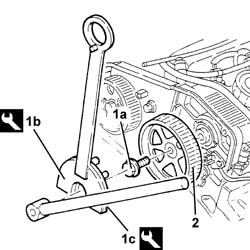
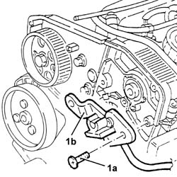
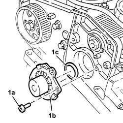

1088C20 Water pump - R.R. with engine removed
- Path
- Procedures > 10 ENGINE > 1088 ENGINE COOLING > 1088C WATER PUMP AND THERMOSTAT > 1088C20 Water pump - R.R. with engine removed
- Kind
- repair procedure (removal / refitting; the operation number is the code)
- Applies to
- engines: 2.4 JTD 10V; all production periods
- Interactive page
- https://sloeber94.github.io/elrnDB-lThss/en/#/498154
Applies to: engines: 2.4 JTD 10V; all production periods
 Removing
Removing
 Refitting
RefittingSee in Op. 1032B16 Toothed timing drive belt - R.R. with engine removed
- Proceed with the removal
1. Undo the bolt (1a) for the toothed driven pulley using the tools (1b) and (1c) for counter-torque.
 | Description | Code | Function |
|---|---|---|---|
1b | Support for counter-torque | 1.831.146.000 | Loosen/Tighten driven toothed pulley bolt |
| Description | Code | Function |
|---|---|---|---|
1c | Counter-torque | 1.831.146.001 | Loosen/Tighten driven toothed pulley bolt |
2. Remove the toothed driven pulley.

Applies to: engines: 2.4 JTD 10V; all production periods
1. Undo the bolts (1a) and remove the cam angle sensor (1b).

Applies to: engines: 2.4 JTD 10V; all production periods
1. Undo the bolts (1a) and remove the water pump (1b) complete with O-ring (1c).

Applies to: engines: 2.4 JTD 10V; all production periods
Refitting
Removing- Position the water pump, complete with new O-ring, in its housing and secure it tightening the bolts to the recommended torque.
 | Value - daNm | Fastening | Component | Ø |
|---|---|---|---|---|
. | (Cylinder head side) 2.3 - 3.3 | Bolt | COOLANT PUMP | M8 |
- Fit the cam angle sensor and secure it using the bolts.
| Value - daNm | Fastening | Component | Ø |
|---|---|---|---|---|
. | 0.8 - 1.2 | Bolt | CAM ANGLE SENSOR |
- Place the toothed driven pulleyin its housing.
- Tighten the toothed driven pulley bolt to the recommended torque using the tools for counter-torque.
| Value - daNm | Fastening | Component | Ø |
|---|---|---|---|---|
. | 11.0 ÷ 15.9 | Bolt | TIMING DUCT PULLEY | M12 |
| Description | Code | Function |
|---|---|---|---|
. | Support for counter-torque | 1.831.146.000 | Loosen/Tighten driven toothed pulley bolt |
| Description | Code | Function |
|---|---|---|---|
. | Counter-torque | 1.831.146.001 | Loosen/Tighten driven toothed pulley bolt |
See in Op. 1032B16 Toothed timing drive belt - R.R. with engine removed
- Proceed with refitting